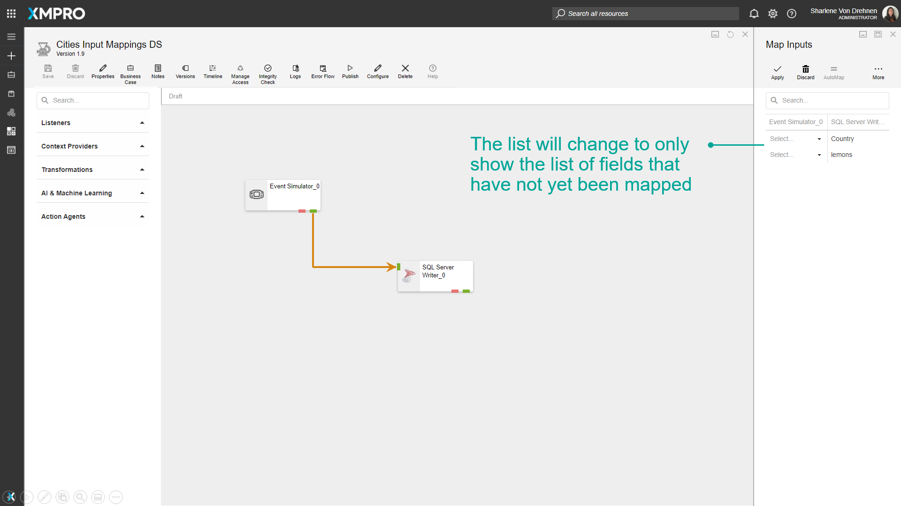

Setup Input Mappings
Input Mappings allow you to specify that an Agent receives its input in a specific structure. This is possible by configuring the arrows between the two Agents, which allow the user to map the inputs of the Agent to incoming attributes.
This functionality is beneficial if you want to map any incoming data from a preceding Agent to specific attributes that can be saved in rows or columns in a database using an Action Agent, such as an SQL Server Writer.
Note
It is recommended that you read the article listed below to improve your understanding of Input Mappings.
Adding Input Mappings
To add Input Mappings between two Agents, follow the steps below:
- Click on the arrow between the two Agents you want to map.
- Click on Configure. The left side lists all the properties the first Agent is sending. The right side is listing all the inputs the receiving Agent is expecting.
- Select the property you want to map for each field. If the value is greyed out, it means it does not match the type (number, text, etc) that the receiving Agent is expecting for that field.

- Click on Apply.

Automap
To map via Automap, follow the steps below:
- Click on the arrow between the two Agents you want to map.
- Click on Configure.
- Click on Automap.
- Click on Apply.

Match by Expression
To map via Match by Expression, follow the steps below:
- Click on the arrow between the two Agents you want to map.
- Click on Configure.
- Click on Match by Expression.
- Enter a prefix, postfix, or Expression. For example, 'num' as a prefix will match 'numApples' with 'Apples'.


- Click on Apply.

Show Unmapped
To show Unmapped fields, follow the steps below:
- Click on the arrow between the two Agents you want to map.
- Click on Configure.
- Click on Show Unmapped.

The list will change to only show the list of fields that have not yet been mapped.

Last modified: May 27, 2025